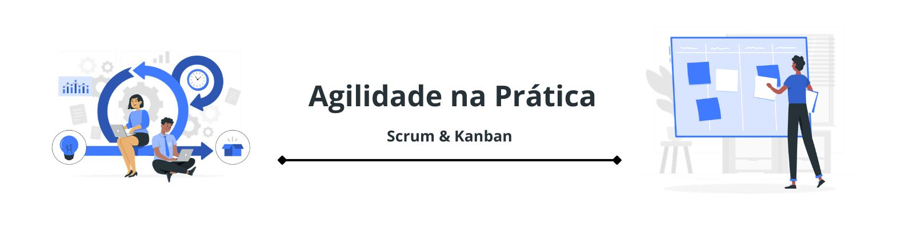

Apresentação
Projetos de software envolvem diferentes tarefas, prioridades, prazos e atividades realizadas individualmente ou em equipe. Sem uma forma organizada de acompanhar esse trabalho, podem surgir dificuldades de priorização, comunicação e acompanhamento das entregas.
Os métodos e práticas ágeis oferecem formas de organizar o trabalho de maneira iterativa, visual e colaborativa, permitindo acompanhar o andamento das atividades e adaptar o trabalho conforme as necessidades do projeto.
Por que utilizar métodos ágeis?
Métodos ágeis valorizam a colaboração, o acompanhamento frequente do trabalho e a capacidade de adaptação. Em projetos de software, essas práticas podem contribuir para maior transparência sobre as atividades, melhor organização das prioridades e identificação de problemas durante o desenvolvimento.
Scrum
Scrum é um framework utilizado para organizar o trabalho em ambientes complexos. Seu funcionamento é baseado em ciclos de trabalho chamados Sprints, nos quais a equipe realiza atividades planejadas e acompanha os resultados.
Pilares
O Scrum se apoia em três pilares: transparência, inspeção e adaptação. A transparência permite que o trabalho seja compreendido; a inspeção possibilita acompanhar o que está acontecendo; e a adaptação permite ajustar o trabalho quando necessário.
Responsabilidades e colaboração
O Scrum organiza responsabilidades dentro do trabalho da equipe, favorecendo clareza sobre as atividades e sobre quem participa de cada etapa. A colaboração e a comunicação frequente ajudam a manter os integrantes alinhados em relação ao objetivo do projeto.
Sprints e acompanhamento
Uma Sprint é um período de trabalho no qual um conjunto de atividades é realizado com um objetivo definido. Durante esse ciclo, a equipe acompanha o andamento do trabalho e realiza momentos de interação e acompanhamento, favorecendo a identificação de problemas e ajustes necessários.
Kanban
Kanban é um método de gerenciamento do fluxo de trabalho que utiliza a visualização das atividades para facilitar o acompanhamento do que está sendo feito, do que ainda precisa ser realizado e do que já foi concluído.
Visualização do fluxo
As tarefas podem ser representadas visualmente em um quadro dividido em etapas. Essa visualização facilita a identificação do estado de cada atividade e ajuda a perceber onde existem acúmulos ou gargalos.
Trabalho em andamento — WIP
O conceito de WIP (Work in Progress) representa o trabalho que está em andamento. A limitação do WIP busca evitar que muitas atividades sejam iniciadas simultaneamente, ajudando a equipe a concentrar esforços na conclusão das tarefas antes de iniciar novas atividades.
Priorização e melhoria contínua
O fluxo de trabalho também pode ajudar na definição de prioridades, permitindo que a equipe identifique quais atividades devem receber atenção primeiro. O acompanhamento do fluxo possibilita identificar gargalos e promover melhorias contínuas no processo.
Scrum + Kanban na prática
Scrum e Kanban podem ser utilizados de forma complementar. Enquanto o Scrum organiza o trabalho em ciclos e estabelece momentos de acompanhamento, o Kanban contribui para a visualização e o gerenciamento do fluxo das atividades.
Nesse exemplo, o trabalho pode ser organizado em uma Sprint, enquanto o quadro Kanban permite visualizar o fluxo das tarefas. A limitação do WIP ajuda a evitar excesso de atividades simultâneas, e o acompanhamento frequente permite identificar problemas, receber feedback e adaptar o trabalho.
Participe da pesquisa
Após conhecer o conteúdo desta página, responda à pesquisa da atividade de extensão. Suas respostas contribuirão para a análise da experiência e para a reflexão sobre o uso de práticas ágeis em projetos de software.
Responder à pesquisa